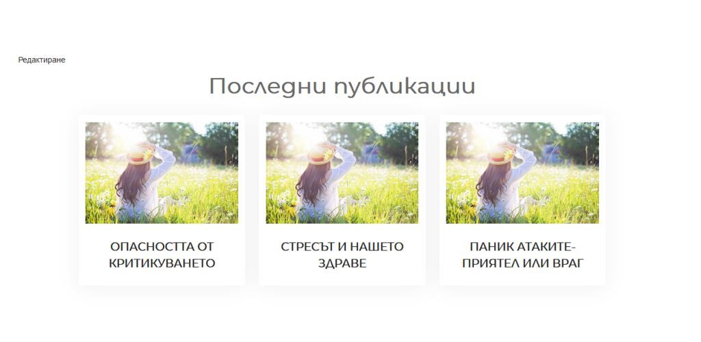

Show Recent Posts with Thumbnails in WordPress Without a Plugin
Sometimes, you may need to add a section in your page that displays your recent blog posts. This can be very useful for portfolio websites and it can be a nice addition to the home page. Normally, you can only add html inside your WordPress posts. However, with the help of shortcodes, you can add some programming logic and create custom content whereever you want. In this post, I will guide you through the process how to create a custom shortcode to display recent posts with thumbnails in WordPress. By the end, you will be able to display the latest posts as a seperate section on your homepage or whereever you want, just like I did:

To take full advantage of this tutorial, you need to have some very basic knowledge of php and you need to have a child theme installed or a plugin that lets you add php snippets.
Create a custom shortcode
The first need to do is to create a shortcode. It is actually easier than you might think. Just paste the following code in your child theme’s functions.php:
add_shortcode( 'yonkov_recent_posts', 'yonkov_recent_posts' );
This peace of code will create a custom shortcode called yonkov_recent_posts. You can use this snippet to paste it inside any page in WordPress.
Display Recent Posts Shortcode With thumbnails
Now, whe need to create a function that will do the magic for us:
function yonkov_recent_posts($atts) {
ob_start();
$atts = shortcode_atts(
array( /* Display the 3 latest posts */
'showposts' => '3',
), $atts, 'yonkov_recent_posts' );
$recent = new WP_Query();
$query = "cat=".$atts['cat']."&showposts=".$atts['showposts'];
$recent->query( $query ); ?>
<ul class="display-posts-listing grid">
<?php while( $recent->have_posts() ) : $recent->the_post(); ?>
<li class="listing-item">
<a class="image" href="<?php the_permalink(); ?>">
<?php /* If there is a featured image, display it */
if ( has_post_thumbnail() ) {
the_post_thumbnail('medium');
} /* If there is no featured image, display default image */
else{ ?>
<img src="/wp-content/uploads/2019/07/7804389671562754084-cpr.jpg" <?php } ?>
</a>
<a class="title" href="<?php the_permalink(); ?>">
<?php the_title(); ?>
</a>
</li>
<?php endwhile; ?>
</ul>
<?php return ob_get_clean();
}
Do not forget to replace the default image url with your own one or remove it, if you do not want to display default image. Now, all that is left to do is to copy the shortcode that we have just created [yonkov_recent_posts] and paste it inside your page content. Save the page and when you open it again, you should see the recent posts inside the page.
Style the recent posts shortcode with css
We have managed to display the recent posts but it does not look pretty, right? Let’s style it with some css! Add the following code to your main style.css file or open your theme’s customizer and paste the code in the additional css tab:
.display-posts-listing.grid {
list-style: none;
display: flex;
max-width: 781px;
margin: 0 auto;
}
.listing-item {
width: 33%;
position: relative;
padding: 10px;
margin: 0 10px;
box-shadow: 0px 2px 30px 0px rgba(0,0,0,0.06) !important;
z-index: 0;
}
.listing-item .image img {
object-fit: cover;
max-height: 180px;
}
.listing-item .title {
display: block;
text-align: center;
width: 95%;
margin: 0 auto;
padding: 15px 0px 10px 0;
box-shadow: none !important;
font-weight: 700;
}
.listing-item:hover .image{
opacity:0.2;
box-shadow: 0 3px 50px -2px rgba(0, 0, 0, 0.2) !important;
}
.listing-item:hover {
box-shadow: 0 3px 50px -2px rgba(0, 0, 0, 0.2) !important;
}
Great! Now we have the recent posts and they finally look good on desktop! However, on mobile version, they are overlapping and still do not look pretty. Let’s fix that as well! Add the following css:
@media only screen and (max-width: 543px){
.display-posts-listing.grid {
display: block;
}
.listing-item {
width: 100%;
padding: 30px;
margin: 30px auto;
}
}
We have finally created a recent posts widget, that looks surprizingly good and it is fully responsive on mobile! Congratulate yourself for the good work and share this post in the social media, if you find it useful! Happy coding!
Read more: